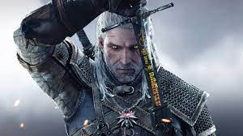
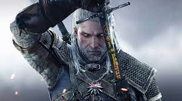

the witcher 3
The Witcher 3 : Wild Hunt est un Action-RPG se déroulant dans un monde ouvert. Troisième épisode de la série du même nom, inspirée des livres du polonais Andrzej Sapkowski, cet opus relate la fin de l'histoire de Geralt de Riv.
The Witcher 3 : Wild Hunt est un Action-RPG se déroulant dans un monde ouvert. Troisième épisode de la série du même nom, inspirée des livres du polonais Andrzej Sapkowski, cet opus relate la fin de l'histoire de Geralt de Riv.
